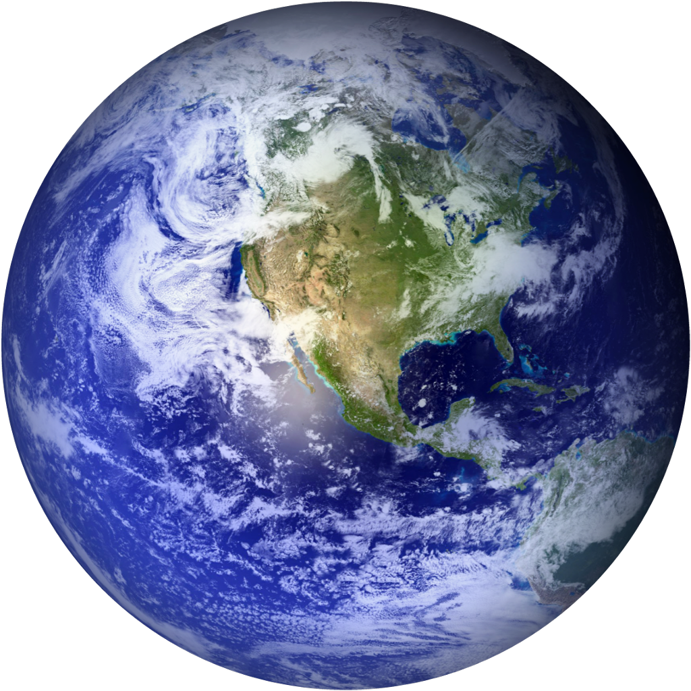

EARTH
At Day|
28°C
At Night|
16°C
5.972 × 10^24 kg
Earth is the third planet from the Sun and the only astronomical object known to harbor life.
About 71% of Earth's surface is made up of the ocean, dwarfing Earth's polar ice, lakes
and
rivers.
Earth is estimated to be 4.54 billion years old, plus or minus about 50 million years.
Scientists
have scoured the Earth searching for the oldest rocks to radiometrically date. In northwestern
Canada, they discovered rocks about 4.03 billion years old.
Scientists sometimes call our region of space the "Goldilocks Zone" because it appears to be just
right for life.
As noted earlier, Earth's average distance to the Sun is about 93 million miles (150
million kilometers) from the Sun. That's 1 AU.